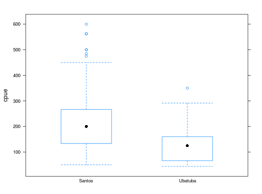
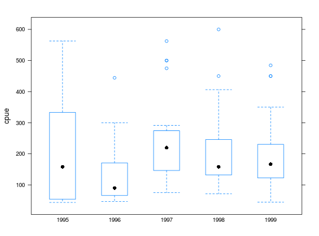
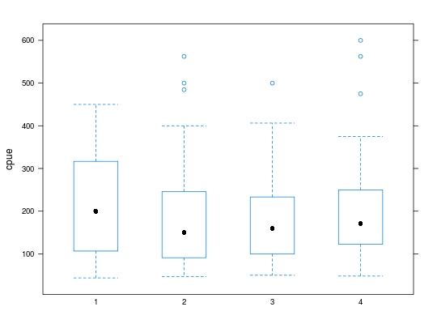
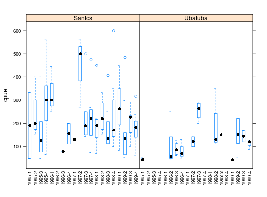
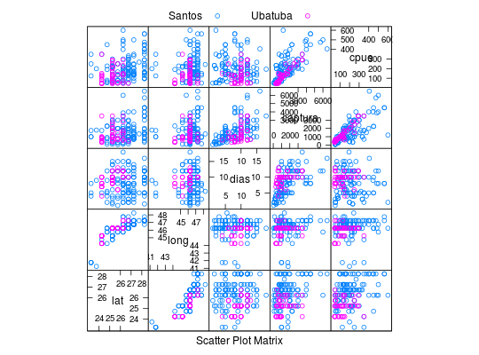

Dados parciais de um estudo sobre a atividade de frotas pesqueiras de espinhel de fundo baseadas no litoral paulista ( Santos e Ubatuba). Neste estudo uma amostra de 156 embarcações pesqueiras, destinadas à pesca do peixe-batata, foi analisada no período de 1995 a 1999. Para cada embarcação foram consideradas variáveis sobre a frota (Santos ou Ubatuba), ano, trimestre, latitude, longitude, dias de pesca, quantidade de peixes capturados e a captura por unidade de esforço (definida como divisão da quantidade de peixe capturado pelos dias de pesca).
Um data.frame com 156 observações e 8 variáveis.
frotaSantos ou Ubatuba.ano1995 a 1996.trim1 a 4.latlongdiascapturacpuecaptura)
pelo número de dias de pesca dias.PAULA (2004), Exemplo 2.4.2, pág. 127.
Paula, G. A., Oshiro, C. H. (2001). Relatório de Análise Estatística sobre o Projeto: Análise de Captura por Unidade de Esforço de Peixe-Batata na Frota Paulista. RAE-CEA0102, IME-USP.
data(PaulaEg2.4.2)#> Warning: data set ‘PaulaEg2.4.2’ not foundstr(PaulaEg2.4.2)#> 'data.frame': 156 obs. of 8 variables: #> $ frota : Factor w/ 2 levels "Santos","Ubatuba": 1 1 1 1 2 2 2 2 2 2 ... #> $ ano : Factor w/ 5 levels "1995","1996",..: 1 2 5 4 1 1 1 4 4 4 ... #> $ trim : Factor w/ 4 levels "1","2","3","4": 3 1 1 2 1 1 1 2 2 2 ... #> $ lat : num 23.2 23.2 23.2 23.8 24.2 ... #> $ long : num 41.8 41.8 41.8 41.2 44.2 ... #> $ dias : num 8 4 5 9 8 7 8 10 7 8 ... #> $ captura: num 1000 1000 1750 1800 420 315 350 3500 950 1000 ... #> $ cpue : num 125 250 350 200 52.5 ...# Separando as covariáveis numéricas index <- sapply(PaulaEg2.4.2, is.numeric) # Número de observações em cada combinação das covariáveis # não numéricas ftable(table(PaulaEg2.4.2[, !index]))#> trim 1 2 3 4 #> frota ano #> Santos 1995 2 3 7 7 #> 1996 3 0 3 2 #> 1997 1 3 6 7 #> 1998 7 4 8 8 #> 1999 10 12 10 14 #> Ubatuba 1995 3 0 0 0 #> 1996 0 5 4 3 #> 1997 0 2 4 0 #> 1998 0 4 1 0 #> 1999 1 7 2 3library(lattice) # Relação marginal da variável resposta com as covariáveis # não numéricas bwplot(cpue ~ frota, data = PaulaEg2.4.2)bwplot(cpue ~ ano, data = PaulaEg2.4.2)bwplot(cpue ~ trim, data = PaulaEg2.4.2)# Relação da variável resposta com as combinações das # covariáveis não numéricas ue <- with(PaulaEg2.4.2, paste(ano, trim, sep = "-")) bwplot(cpue ~ ue | frota, data = PaulaEg2.4.2, scales = list(x = list(rot = 90)))# Verificando a suposição de coeficiente de variação constante, # desconsiderando as covariáveis tri e numéricas resumo <- aggregate(cpue ~ frota + ano, data = PaulaEg2.4.2, FUN = function(x) { c("Média" = mean(x), "D.Padrão" = sd(x), "C.Variação" = sd(x)/mean(x), "n" = length(x)) }) ftable(xtabs(cpue ~ frota + ano, data = resumo))#> Média D.Padrão C.Variação n #> frota ano #> Santos 1995 229.3690958 148.0695696 0.6455515 19.0000000 #> 1996 193.1944438 132.5485325 0.6860887 8.0000000 #> 1997 262.6719888 153.6020288 0.5847674 17.0000000 #> 1998 210.3884852 122.9545516 0.5844167 27.0000000 #> 1999 199.8837141 103.4509454 0.5175556 46.0000000 #> Ubatuba 1995 47.0833333 4.7324236 0.1005117 3.0000000 #> 1996 96.0949075 59.1899262 0.6159528 12.0000000 #> 1997 210.5555567 77.5074669 0.3681093 6.0000000 #> 1998 174.4285720 99.1628220 0.5685010 5.0000000 #> 1999 140.8547008 71.5901930 0.5082556 13.0000000# Relação das covariáveis numéricas splom(~PaulaEg2.4.2[, index], groups = frota, data = PaulaEg2.4.2, auto.key = list(column = 2))